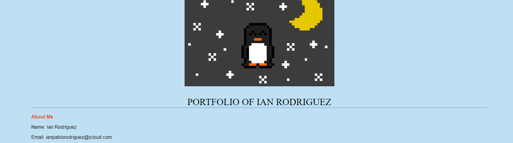
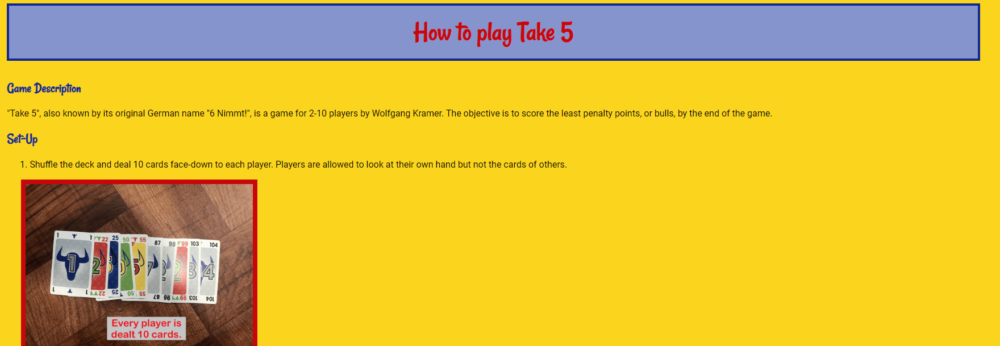
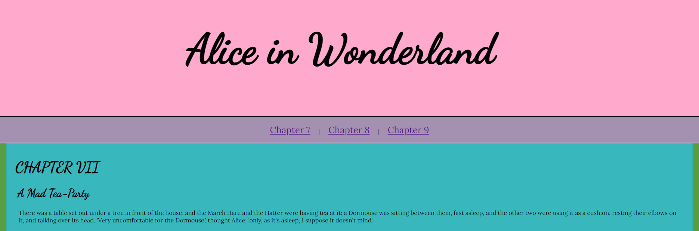
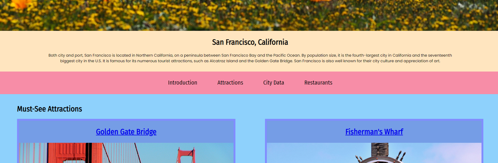
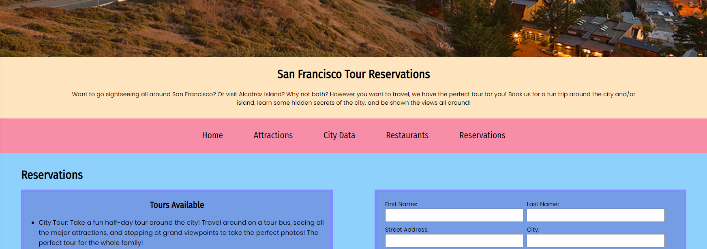
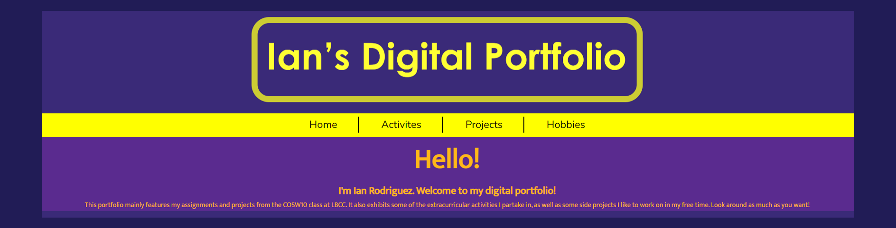

This project was a nice refresher on what I already knew. The requirements were to make a beginning portfolio/resume site about ourselves using HTML. I had already learned how to do so from my web design unit in middle school, so I finished the task quite easily. As such, I decided to add some CSS as well by using what I had already learned previously. Looking back on the project after finishing the COSW10 course I can absolutely see some areas where I can improve the design to be more appealing. However, for making a first impression in the class I believe I exceeded the expectations for the project.
Once again, this project tested what I had already learned from middle school. The target was to demonstrate a basic understanding of CSS by creating a webpage based on a list of topics. I decided on creating an instructional how-to guide on playing one of my favorite games, "Take 5". Because the starting CSS expectations were quite basic, I was able to easily decorate the page with the knowledge I had from middle school web design. Reflecting on it now, I can easily come up with multiple ideas on improving the site, such as using HTML semantic elements and CSS float. But even so, I'm still quite proud of the content I created and how it displays my passion for the game.
This project was much more of a struggle. For the project we had to make pages for 3 chapters of the story "Alice in Wonderland" (chapters 7-9 for me) and style them with CSS. Unfortunately, during the time I spent working on it, I got sick with COVID-19. Luckily I was healthy enough to still work on the project, but I had to take more breaks and rest in order to not worsen my illness. I ended up doing the bare minimum required for the project instead of implementing the creative ideas I had for it. While I do wish I could have put more time and effort into my website, given the circumstances it is understandable why that was not possible.
This project was challenging but rewarding as well. The goal was to create a one-page website on a city we liked. As I had recently taken a trip to San Francisco, I decided on writing my page about it. The main problem I faced was having to learn how to create floating columns. Seeing how I had never done so before, I wanted to make sure that they were responsive to both PC and mobile users. Though it took some effort, with the help of tutorials online I was able to design a page I was satisfied with. If I were to have a critic, I was unable to make the columns perfectly align in length with each other without sacrificing responsive web design. Nevertheless, I'm still proud of the content I created despite facing a new topic.
This project was unlike anything we had done before. Instead of creating a new webpage, we had to update our previous city page to include a navigation bar, a separate reservations page, and a table in the homepage featuring data about the city. Luckily, I already made a navigation bar and data table in the prior draft so all I had to add was the reservation page. I had rarely used HTML forms in previous assignments, so I was still somewhat new to them. While it was easy simply adding them to the page, it took more research and effort to design them to be responsive for mobile users as well. Nonetheless, I am still proud of the final result and how I was able to surpass having to use an unknown element.
If you haven't noticed yet, you're already viewing this project! The requirements were to create a COSW10 portfolio webpage displaying our assignments and projects, as well as any other skills we wanted to demonstrate. Because the project was so open-ended, at first I struggled with figuring out how I wanted to design my portfolio. Because I knew I wanted it to be responsive to both PC and mobile users, I decided on using a somewhat minimal structure, going straight to the point on the content shown. Once the structure was built, I had a fun time reflecting on my previous work to write descriptions for each of them. While it might not be the most detailed portfolio, I believe the use of HTML and CSS are a good representation of my skills after taking the COSW10 course.